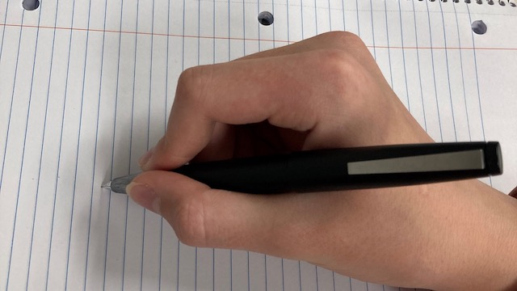

Penmanship
Even though I learned some cursive starting in the first grade, my handwriting mastery is imperfect. So how would someone who can’t write neatly or legibly have such an interest in fountain pens? Pens are fascinating to me because each pen has its own properties, they take refillable ink, and are eco-friendly.
As someone with Dysgraphia, regular writing utensils require extra effort to write text that is readable. Fountain pens write under their own weight and their typically larger barrel is easy to grip. All of these properties of fountain pens can improve the legibility of handwriting.
I have become motivated to improve my ability in handwriting. There are helpful videos on this topic from my favorite sources below.
Learning with Tom from Goldspot Pens:
 How to Improve your Handwriting with a Fountain Pen - YouTube
How to Improve your Handwriting with a Fountain Pen - YouTube
- Technique - slow down, posture, angle light loose grip, imitation
- Tools - Find your right nib size. Try Stub first, then advance to Flex Nib. Favorite ink color, and the right paper!
- Training - Alphabet, doodling, quotes, passages
A few notes from Tom: Practice as little as 5 minutes each day, have patience, and slow down.
- Practice Print Style Lettering on the French Ruled Notebook, with stub nib
- SERIF/TYPEWRITER Style
- Cursive with a stub, and flexible nib option
- Shaded Faux Calligraphy by thickening downstroke
- OUTLINE with drop shadow
Learning with the Goulet Pen Company:
5 Tips to Improve Your Handwriting with Fountain Pens - YouTube- Invest time in discovering what works for you. Try an extra fine nib for tiny writing. Try a medium broad nib for larger writing. Use flex nibs for cursive, or a stub/parallel nib
- Relax the hand and release pressure. Using a flex nib is the only time to use pressure.
- Write slowly to avoid railroading, skipping, and smearing. Apply technique that matches the ink.
- Draw inspiration from others. (Pinterest, or better yet Etsy?)
- Practice to progress to gain more confidence and skill.
Spencerian Handwriting

An eventual goal sometime in my lifetime will be to write Spencerian style, which became the standard business writing technique between 1850 and 1925.